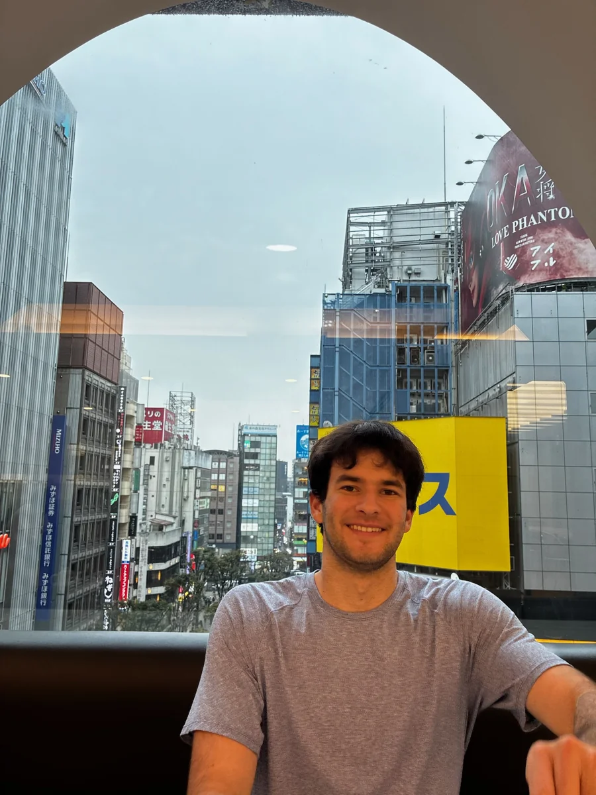

I grew up with five siblings.
Five siblings, years of inside jokes, and five people who can be my rivals and my best friends. I can’t imagine growing up any other way.
NORTHWESTERN ’28 · CURRENTLY IN SEOUL
From Detroit. At Northwestern.
Usually solving something.
I’m a junior studying economics and data science at Northwestern, currently spending a semester at Yonsei University in Seoul. When I’m not traveling or hanging out with family and friends, you can probably catch me solving something: a Rubik’s Cube, a crossword, or a game of chess.
I love staying engaged, learning more about the world, and figuring out how I fit into it. I’d like to bring that same curiosity to real-world problems where the answer can make a difference.

THE SHORT TOUR
An internship in fintech, business strategy, tutoring, and the school newsroom.
My experience ↗02 / PROJECTSCube solves, restaurant reviews, healthcare, and how students choose housing.
The projects ↗03 / INTERESTSTravel, the Pistons, puzzles, and a growing list of things I want to learn.
The personal side ↗A COUPLE OF SMALL THINGS
Two things you’ll hear about pretty quickly if we meet.
Five siblings, years of inside jokes, and five people who can be my rivals and my best friends. I can’t imagine growing up any other way.
I’m obsessed with Breaking Bad and Game of Thrones. Give me a quote and let’s see whether all that watching paid off.
SAY HELLO